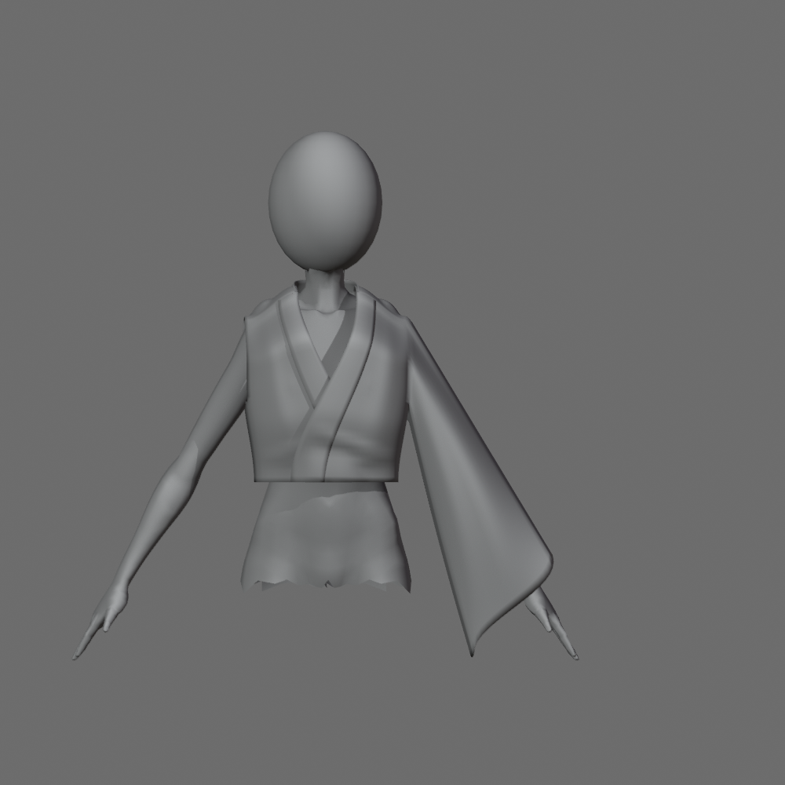
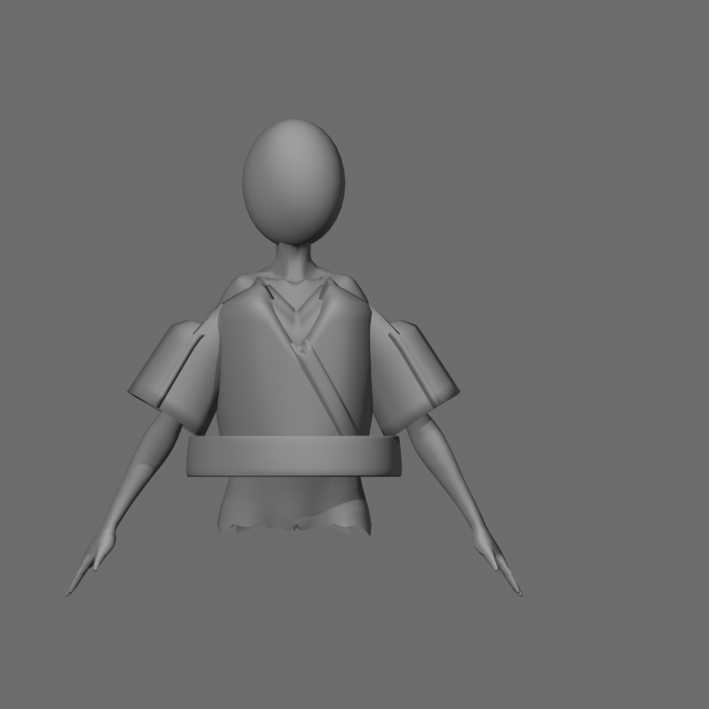
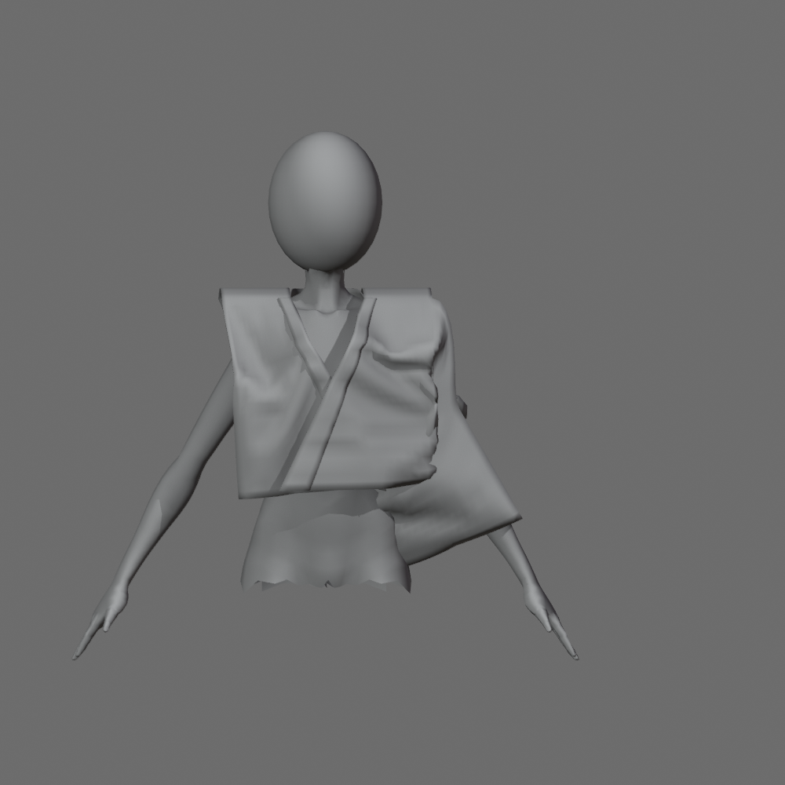

Mẫu clay · Chờ duyệt formKagari — dựng lại theo concept
Một cổ áo, một tay áo dài loe và phần thân nối trên mannequin riêng. Cổ chéo rộng hơn, vai xuôi và thân trước thoáng hơn. Bản này chưa đạt toàn bộ kiểm tra và chưa ghép vào Kagari.
 Concept Kagari hiện có · chỉ có góc trước
Concept Kagari hiện có · chỉ có góc trước
Bản theo concept v3 · neutral clay · một tay áoSo sánh cùng góc nhìn và tư thế
Study panel trước được dựng với tay hạ 30°; các ảnh dưới đặt nó ở pose hạ 60° để so sánh với mẫu mới. Cycle 03 có hai tay áo và đai, mẫu mới chỉ một tay áo.
Cycle 03 · baseline chưa duyệt

Tay áo ngắn, gốc vai rời, cổ bị nhăn.
Study panel + Cloth trước

Vai cao và nếp vải dồn ở nách.
Form theo concept · v3
Cổ chéo rộng, tay dài loe; còn lỗi gáy và độ rủ.
Cận cổ và vai
Những điểm cần đánh giá tiếp
Cổ sau và vai
Mép gáy hơi bật, yoke còn gờ rộng. Cổ chéo trước đã có lớp phủ rõ.
Độ rủ
Tay dài và rộng hơn, nhưng mặt tay và lưng còn trơn. Chưa tái tạo đầy đủ lớp áo khoác trong concept.
Pose và clearance
Nâng tay 30° bớt gãy nách. Giơ ngang vẫn cần kiểm tra sát cơ thể; chưa chứng nhận không xuyên mesh hoặc hoạt động trong VRM.
Phần bụng và cổ mannequin có biên cắt chẩn đoán. Bên chưa dựng tay áo cố ý để trống. Chưa thêm màu, họa tiết, phụ kiện hoặc đai.
Báo cáo đầy đủ · File Blender mới
Phiên bản và dữ liệu kiểm tra
concept-directed-controlled-sheets-v3
131d3c25f8c4b37c81786bfe2af970c254df256c20c8e114ed6de9f26b652af2
9.659 tam giác raw · 20.228 sau modifier cho trang phục. Hai surface liên thông, weight chuẩn hóa; kiểm tra hình học không phải duyệt thẩm mỹ.
Kiểm tra mesh và pose · Render manifest